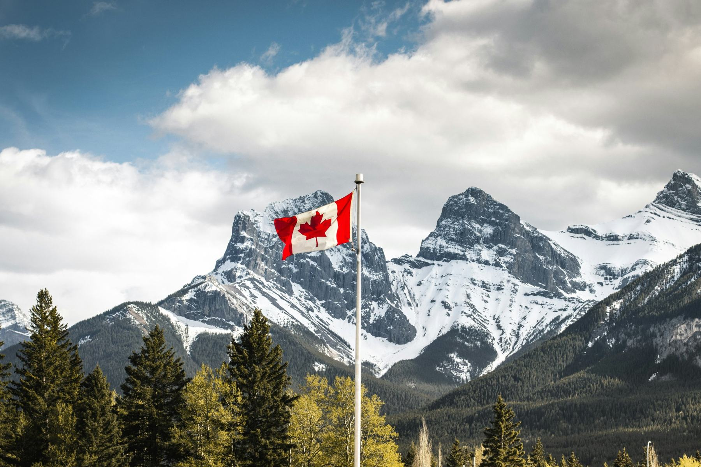

Canada.A trusted market, now opening wider.
Canada combines a stable business environment, access to major trade agreements and a growing need for new suppliers and partners.

Why Canada, 2026 onward
Companies are looking for new suppliers
In a 2026 CFIB survey, 49% of firms trading with the US had shifted toward non-US suppliers or customers.
A government focused on diversification
Ottawa is signing and negotiating agreements across Asia, the Gulf, Europe and the Americas, which opens doors for overseas exporters.
Trade agreement access
CUSMA, CETA with the EU and CPTPP in Asia-Pacific give Canadian-based operations preferential routes to other major markets.
A stable, high-income market
About 41 million consumers, strong rule of law, transparent regulation and well-developed banking and logistics.
Pacific gateway
Vancouver and Prince Rupert connect Asian shipping lanes to Canadian and US inland markets.
Partner locally, win more
Buy Canadian procurement policies favour local presence, so a Canadian partner can open doors.
New trade deals
Canada–UAE CEPA
Concluded in July 2026 and signed in October. Expected in force in 2027.
Canada–Indonesia CEPA
Signed in September 2025.
Canada–Ecuador FTA
Signed in July 2026.
In negotiation
India, ASEAN, the Philippines, Saudi Arabia, Türkiye and Thailand.
The CUSMA review reached its July 2026 milestone with the agreement staying in force and moving to annual reviews. The USA has also applied 50% tariffs to certain Canadian goods since August 2026. Rules keep changing, so we track them for you.


What to plan for
Customs and CARM
Non-resident importers need correct registration, accounts and documentation.
Labelling and standards
Bilingual English and French labelling and Canadian safety standards apply to many goods.
Costs and timing
Duty, taxes and freight shape your landed cost, so model them early.
Planning a move into Canada or the USA?
Tell us what you make, sell or want to source. We will tell you honestly what it takes.
Talk to our team